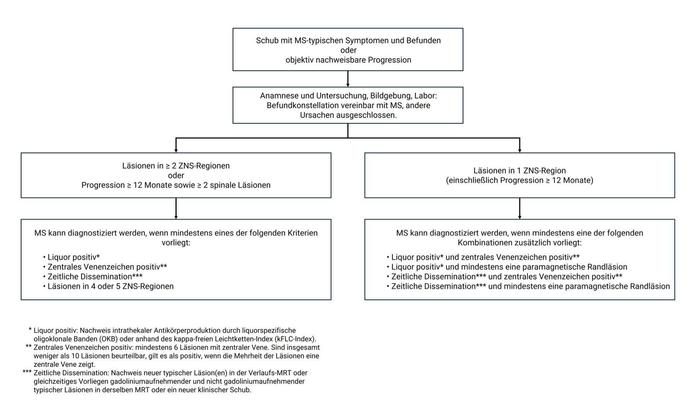

O que é disseminação no tempo e no espaço — e como preencher clinicamente? Os Critérios de McDonald organizam as duas dimensões.
O que é McDonald
A grande forma de fazer o diagnóstico de EM é pelos Critérios de McDonald. Esses critérios foram modificados em 2025 (atualização citada). Mudanças finas importam mais ao neurologista (↑sensibilidade); para o raciocínio de prova o padrão central se mantém.
Caixa-nuança [088] — atualização disponível
A revisão internacional canônica rotula-se McDonald 2024 (disseminação 2024–2025). O PCDT BR vigente ainda ancora o diagnóstico operacional em McDonald 2017. Mantém-se o discurso da fonte e a honestidade de versão — o eixo tempo + espaço continua o núcleo de prova.
Tempo
Disseminação no tempo: ter pelos menos duas crises (mais de um surto) em momentos diferentes. Surto, por definição: dura mais de 24 horas. Remissão / intervalo: pelo menos 1 mês entre eventos distintos. Apresentando mais de um surto com esse padrão, o eixo temporal fica clinicamente preenchível.
Completar mentalmente: surto na ausência de febre/infecção (pseudoexacerbação). Formulação operacional: intervalo ≥1 mês entre surtos.
Espaço
Disseminação no espaço:mais de uma lesão / localização diferente no SNC.
Exemplos clínicos
Exemplo: paciente internada hoje sem enxergar o olho esquerdo e sem mexer o lado direito — isso dura >24 h → uma crise atual com duas lesões (visão + motricidade). Na história: quatro meses atrás também perdeu visão e metade dos movimentos → segunda crise no tempo. Critério tempo e espaço preenchidos.
Variante: há quatro meses surto >24 h sem visão; agora surto >24 h com perda de movimento → tempo + espaço (visão num momento, motricidade noutro).
Tempo e espaço não se excluem
Espaço e tempo não são mutuamente excludentes: o espaço pode ser preenchido ao longo do tempo (lesões em surtos diferentes) ou de uma vez só (duas lesões no mesmo surto). É possível, só pela história, já ter disseminado no tempo e no espaço — mas a imagem ainda entra.
Regra de ouro: EM = doença disseminada no tempo e no espaço. Preenche os dois → faz o diagnóstico (no raciocínio de prova + imagem).
Eixo
Como preencher
Tempo
≥2 surtos em momentos diferentes · surto >24 h · intervalo ≥1 mês
Espaço
≥2 locais no SNC (no mesmo surto ou ao longo do tempo)
Exemplo
Hoje: visão OE + hemiparesia D (>24 h, 2 lesões) · 4 meses atrás: visão + fraqueza → 2ª crise no tempo
HeróiMatriz TEMPO × ESPAÇO: eixos “≥2 surtos; surto >24 h; intervalo ≥1 mês” e “≥2 locais SNC”; quando ambos cheios = diagnóstico. Passe o mouse nos pontos.

Algoritmo McDonald 2024 (DIT/DIS) — disseminação no tempo e no espaço. “Zeitliche Dissemination” = tempo; “Läsionen in ≥2 ZNS-Regionen” = espaço.
O fluxograma oficial mostra DIT (tempo) e DIS (espaço) como os dois eixos. O PCDT BR ainda opera com McDonald 2017, mas o eixo tempo+espaço permanece o núcleo — é o que a prova cobra.
PisoMini-timeline “hoje / 4 meses” com checks de tempo e espaço preenchidos.
A clínica motiva; a RM confirma.
Quiz
Q1. Disseminação no tempo exige, no núcleo de prova:
Gabarito: B. Tempo = ≥2 surtos, cada um >24 h, com intervalo ≥1 mês entre eles.
(A) 2 horas não é surto. (C) uma lesão é espaço, não tempo. (D) não há biópsia na EM.
Q2. Disseminação no espaço:
Gabarito: B. Espaço = ≥2 locais no SNC — pode ser no mesmo surto (duas lesões) ou em surtos diferentes.
(A) pode ser no mesmo surto. (C) EM é SNC, não SNP. (D) LCR não prova espaço.
Q3. Surto, por definição operacional desta fonte:
Gabarito: B. Surto dura mais de 24 horas.
(A) minutos não é surto. (C) plasmaférese é alternativa, não definição. (D) Uhthoff é piora térmica, não surto.